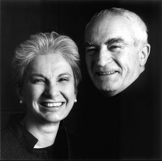

Массимо Виньелли (1931-2014) был итальянским дизайнером, который работал во многих областях, от дизайна упаковки до дизайна посуды и дизайна мебели, до вывесок и выставочного зала. Он был соучредителем Vignelli Associates вместе со своей женой Леллой.
Массимо Виньелли

Рожденный в Милане (Италия) в 1931 году, в 16 лет он покинул школу, чтобы работать проектировщиком, а затем с 1950 по 1953 изучал архитектуру в Милане и Венеции. Вдохновленный такими шведскими модернистами, как Макс Хубер и Антонио Боджери, он тяготел к графическому дизайну.
Массимо Виньелли и Лелла

В 1957 он женился на Лелле Валле, и они уехали в США: Массимо — по гранту в Towle Silversmiths, а его жена — по архитекторской стипендии в MIT. Через год они перебрались в Чикаго, где Массимо начал преподавать на кафедре дизайна в Иллинойском технологическом институте и работать в Container Corporation of America.
Heller packaging
Многие проекты Виньелли признаны классическим образцом современного дизайна, включая фирменный стиль American Airlines (1967); графику для Службы национальных парков США (1977 год); схему метро для Транспортного управления Нью-Йорка (1970 год); и дизайн интерьера церкви Святого Петра в Нью-Йорке (1977 г.), где «полный дизайн-концепт» включал всё: от органа — до мебели, серебряных аксессуаров для причастия, и прочего.